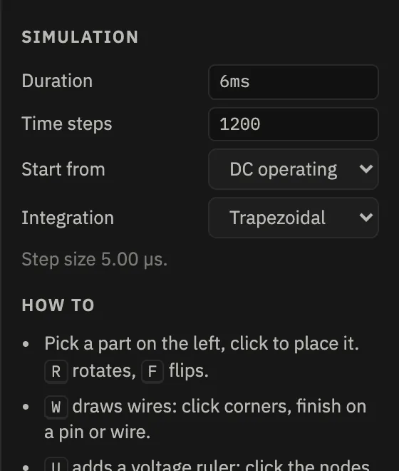
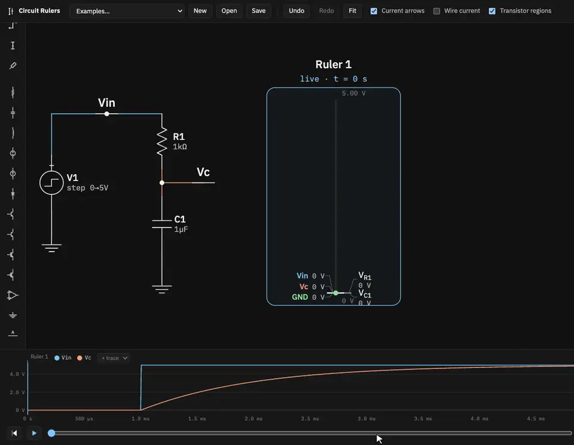
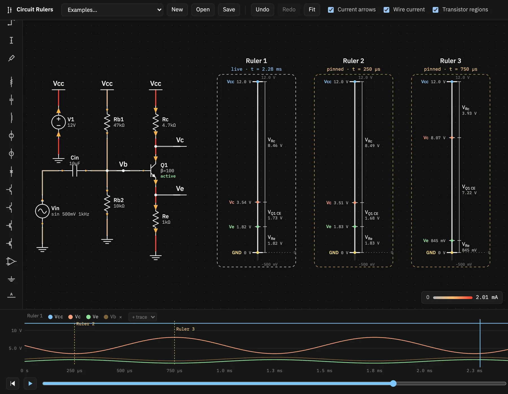

Features
Time and the plot
Every circuit is simulated over a stretch of time. You choose how long and how finely, then move through the result with the scrubber, the keyboard or the plot.
Simulation settings

Click an empty spot on the canvas to see them in the inspector.
- Duration: how long the run lasts, from t = 0.
- Time steps: the number of points on the time grid, from 2 to 20 000. The step size is shown below.
- Start from: the DC operating point (the circuit settled before t = 0), or the initial conditions on capacitors and inductors, which are zero unless you set them.
- Integration: trapezoidal (the default, accurate) or backward Euler (damps ringing a little).
The circuit re-simulates whenever its connectivity, a value or a setting changes. Moving parts around without changing what's connected doesn't trigger a new run. The top bar shows the result: steps, step size and how long it took, or a ⚠ with the reason if the simulation stopped.
Choose a step well below the fastest thing you want to see: a tenth of a time constant, or 50 or more steps per period of a sine. Fast edges in a slow run can be missed between steps.
Sources and waveforms
Voltage and current sources take one of four waveforms, set in the inspector:
| Waveform | Settings |
|---|---|
| DC | Value |
| Step | Initial, Final, Step at, Rise time |
| Pulse | Low, High, Delay, Rise time, Fall time, High for, Period (repeating) |
| Sine | Offset, Amplitude, Frequency, Delay, Phase |
The symbol shows the waveform type, and a short description is printed beside it, for example
step 0→5V or sin 500mV 1kHz.
Scrubbing and playback
- Drag the scrubber, or click or drag anywhere on the plot.
- Space or the ▶ button plays. A full run plays in 8 seconds at 1×, and the speed menu offers 0.25× to 4×.
- ← / → step one time point (ten with ⇧), and Home / End jump to either end. The ⏮ button also goes back to the start.
- The current time is printed on the right, as
t = 1.500 ms / 6.00 ms.

The plot
The plot shows node voltages over the whole run, with a cursor at the current time. Its traces follow a ruler: the selected one, or the first ruler when none is selected. The legend shows that ruler's name and its nodes, in the same colours as its ticks.
- Pinned rulers appear as labelled dashed markers at their moment.
- Hover a wire on the canvas to see its node as a temporary white trace.
- With no rulers at all, the plot shows the first few nodes of the circuit.
Probes
A probe adds a node to the plot without putting it on a ruler. Press T (or pick the probe tool) and click a wire or pin. Click the same node again to remove it, or click the × next to its name in the legend. The + trace menu in the legend adds a node by name.
- Probed nodes are drawn as fainter traces, whichever ruler is selected.
- They count towards the plot's vertical range.
- They're saved with the circuit and move with the pins they sit on.
- GND can't be probed, since it's the 0 V reference.
